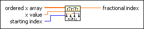

Search Ordered Table VI
Owning Palette: Interpolation & Extrapolation VIs
Requires: Full Development System
Works on the assumption that ordered x array is in monotonically increasing or decreasing order and can therefore efficiently search for the relative index of the location of x value within the x array. The VI starts the search at the starting index and begins by using a fast hunting phase to roughly bracket the location and then narrows to the final bracket using a bisection search. The VI computes the fractional index location by using linear interpolation.

 Add to the block diagram Add to the block diagram |
 Find on the palette Find on the palette |